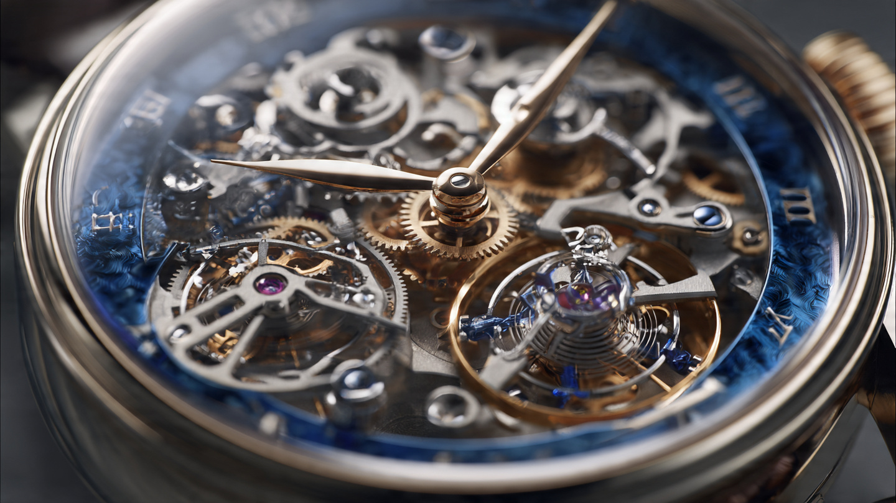

511 Parts, Three Numbers: How the Ulysse Nardin Super Freak Puts an Automotive Differential on Your Wrist

A differential averages two inputs. In a car, those inputs are wheel speeds; in the Super Freak, they are oscillator rates. Identical mathematics underpin both: take two independent rotational sources that inevitably run at slightly different velocities, combine them through a planetary or bevel gear arrangement, and output a single averaged result that is more stable than either input alone. Automotive engineers have been refining this concept since the late nineteenth century, and watchmakers arrived at it much later with different constraints, but the problem statement is the same.
Two oscillators are better than one, not always, but in theory, and the Super Freak is the kind of watch that exists to prove a theory correct at any cost.
Why Two Tourbillons Need a Differential
A single tourbillon rotates the entire escapement assembly, balance wheel and all, through 360 degrees once per minute to average out positional errors in the rate. When a watch sits dial-up, the balance spring behaves differently than when it sits crown-down, because gravity pulls on the balance wheel and hairspring asymmetrically depending on orientation. A tourbillon rotates the assembly through all vertical positions continuously, so gravitational errors that would accumulate in one position are counteracted by equal and opposite errors in the complementary position over each sixty-second rotation.
Tourbillons work. They measurably reduce positional error in high-grade movements. But a single tourbillon still has residual errors because it rotates in only one plane. A multi-axis tourbillon addresses this by rotating through additional planes, and Jaeger-LeCoultre’s Gyrotourbillon À Stratosphère, announced at the same Watches and Wonders 2026 fair, takes this approach to its logical extreme with triple-axis rotation covering 98% of all possible positions.
Ulysse Nardin chose a different path. Instead of rotating one tourbillon through more planes, they used two tourbillons rotating in opposite directions and averaged their rates through a mechanical differential. Each tourbillon is inclined at 10 degrees from the plane of the movement, and they counter-rotate, meaning that the positional errors one tourbillon experiences at any given moment are partially offset by the complementary errors the other tourbillon experiences at the same instant, because the two are in different orientations relative to gravity at all times.
What follows is pure mechanics, not electronics, not software, not any form of digital signal processing: gears and ball bearings, five millimeters across, performing the averaging mechanically.
Five Millimeters of Differential
In a Torsen differential, helical gears create speed-dependent torque distribution between two axle shafts, and the geometry of those gears generates internal friction proportional to the speed difference between the shafts, which naturally resists excessive differentiation and distributes torque toward the slower-spinning wheel. An automotive Torsen unit is roughly the diameter of a dinner plate and weighs several kilograms.
UN’s vertical differential is a planetary arrangement using eight ceramic ball bearings, and Ulysse Nardin chose an ascending axis design, which physically raises the geartrain above the plane of the movement to increase visual depth through the sapphire crystal. Functionally, the ascending axis means the differential sits proud of the surrounding components, visible and mechanically accessible. Previous Freak models with dual escapements, specifically the Freak S, used a descending axis that buried the averaging mechanism below the primary movement plane.
Ceramic ball bearings matter at this scale because steel bearings would introduce friction that consumes a meaningful percentage of the tourbillons’ already limited torque output. Ceramic, specifically silicon nitride or zirconia, offers lower rolling friction, higher hardness, and better dimensional stability at the temperatures a wrist-worn mechanism experiences, and it is the same material class that Formula 1 engine bearings and high-performance skateboard bearings use, except at a scale where each ball is barely visible to the naked eye.
Calling it the world’s smallest differential is marketing language that also happens to be true. No other watchmaker has built a vertical differential at 5mm. Nobody in the automotive industry has reason to build one this small. It exists in a category of one.
The Gimbal Problem
Averaging two tourbillon rates would be impressive on its own, but the Super Freak goes further. It adds a seconds display, the first in any Freak, and that display sits off-axis from the differential output. Transmitting rotational energy from one axis to a decentered parallel axis is a geometry problem that automotive engineers solved with universal joints and cardan shafts. Ulysse Nardin solved it with a 4.8mm gimbal.
Patented and measuring 4 by 12 millimeters, this gimbal maintains mechanical alignment and consistent energy transmission between the differential output and a rotating cylindrical seconds indicator nestled between the two tourbillons. Without it, the seconds display would accumulate angular error as the carousel rotates, because the relative position of the differential output and the seconds cylinder changes continuously during the one-hour carousel rotation, and the gimbal compensates for this changing geometry in real time, mechanically, with components measured in hundredths of a millimeter.
Cardan shafts in automotive drivetrains handle the same class of problem at speeds of thousands of RPM and torques measured in hundreds of newton-meters, while the gimbal handles it at fractions of a revolution per second and torques so small they are measured in micro-newton-meters. Same engineering challenge, different universe of scale.
DIAMonSIL and the Silicon Legacy
Silicon in watchmaking is ubiquitous now: Rolex, Omega, Patek Philippe, Audemars Piguet, nearly every serious manufacture has adopted it for balance springs, escape wheels, or both. But someone had to go first, and that someone was Ulysse Nardin in 2001 with the original Freak.
Ludwig Oechslin designed the Freak’s Dual Direct Escapement, a mechanism reminiscent of Abraham-Louis Breguet’s Echappement Naturel from the early 19th century. Oechslin realized that silicon, manufactured through the Deep Reactive Ion Etching process borrowed from semiconductor fabrication, could produce escapement components with geometries impossible to achieve in metal. DRIE allows etching of near-vertical sidewalls with aspect ratios exceeding 20:1, creating structures with sharp, precise features at scales where traditional machining and stamping simply cannot operate. Oechslin left Ulysse Nardin in 2003, but his contribution changed the industry. UN co-founded Sigatec in 2006, the silicon component manufacturer that now supplies escapement parts to multiple Swiss houses. Sigatec is celebrating its twentieth anniversary this year.
Both Super Freak escapements use DIAMonSIL for their contact surfaces, Ulysse Nardin’s proprietary diamond coating applied to silicon escape wheel teeth and pallet fork faces. Diamond’s coefficient of friction against itself is approximately 0.1 in dry conditions, compared to 0.5 to 0.7 for steel-on-steel. More importantly, diamond-coated surfaces do not require lubrication, and traditional escapements depend on synthetic oils that degrade over five to ten years, thickening in cold conditions and thinning in heat, introducing rate variation that accumulates between service intervals. DIAMonSIL eliminates this degradation path entirely.
Both tourbillons in the Super Freak use silicon balance wheels and hairsprings alongside DIAMonSIL escapements. Silicon hairsprings are anti-magnetic, immune to the fields produced by smartphones, laptop speakers, and magnetic clasps that can magnetize a traditional Nivarox or Elinvar hairspring and introduce rate errors of minutes per day. They are also lighter than metal, which reduces the inertial load on the escapement and theoretically improves impulse efficiency.
The Grinder Winding System
A double tourbillon carousel demands substantial energy. Two rotating tourbillon cages, each carrying a complete balance wheel, hairspring, escape wheel, and pallet fork assembly, represent a parasitic load that far exceeds a conventional balance wheel oscillating in place. Add the continuously rotating carousel that carries the entire movement through 360 degrees per hour, and the power budget becomes enormous by watchmaking standards.
First introduced in the InnoVision 2, the Grinder winding system uses an oscillating weight connected to the frame by levers just 0.12mm thick. These levers engage a finely-toothed wheel through a pawl arrangement that converts even the smallest wrist movements into mainspring tension. Standard automatic winding systems use a rotor with enough mass to swing freely under gravitational force as the wrist moves, but the Grinder’s architecture extracts energy from accelerations too small to move a conventional rotor. Think of it as regenerative braking for your wrist: capturing kinetic energy from micro-movements that other winding systems simply waste.
Despite the massive energy demands, the Grinder delivers 72 hours of power reserve. Three days. That is more than adequate for a watch you might not wear on a Tuesday, and it means the Super Freak can sit on a winder set to minimal rotation speed without running down.
97.46% Motion
Of 511 components in Caliber UN-252, exactly 13 are stationary; everything else moves. Its minute bridge, carrying both tourbillons and the differential, rotates once per hour as the minute hand, while the hour disc beneath it, made from transparent blue Nanosital polycrystalline material, rotates once every twelve hours. Both tourbillon cages rotate once per minute, the balance wheels inside each cage oscillate at 2.5 Hz, the seconds cylinder rotates continuously, and the Grinder oscillates with every wrist movement. Gears throughout the train rotate at various speeds to connect all of this into a coherent timekeeping system.
At 44mm wide and 16.54mm tall, with an apparent height of 12.2mm, the white gold case is smaller than the 45mm Freak S despite containing dramatically more mechanism, which speaks to the packaging density Ulysse Nardin achieved in its seven-plane architecture. No crown interrupts the case profile: time setting happens through the rotating bezel, and manual winding, should you need it, through the serrated caseback.
Water resistance is thirty meters, enough for hand washing but not swimming, and nobody will take a $393,600 limited-to-fifty white gold watch swimming anyway.
The Cost of Telling Time
$393,600 for fifty pieces, roughly the price of a well-optioned Porsche 911 Turbo S, the car whose Torsen differential operates on the same averaging principle as the mechanism inside this watch. A Turbo S has about 12,000 components; the Super Freak has 511. Price per component, the Super Freak wins by a factor of roughly fifty, which is not a useful metric but an illustrative one.
Whether the Super Freak is worth its price depends entirely on how you define worth. As a timekeeping instrument, it is objectively worse than a $30 Casio F-91W, whose quartz crystal oscillates at 32,768 Hz, a frequency that makes the Super Freak’s 2.5 Hz feel prehistoric. A Casio keeps better time, by orders of magnitude, in a package that weighs nothing and survives being dropped from a balcony.
But nobody buys the Super Freak to keep better time. They buy it because sixty hours of hand assembly by a single human being, working at a scale where components measure fractions of a millimeter, produced something that transforms mechanical motion into temporal measurement through 511 interacting parts and two counter-rotating tourbillons averaged by the smallest differential ever built. That is not timekeeping. That is mechanical philosophy.
In 2001 the Freak changed watchmaking by proving silicon could work in escapements. Twenty-five years later, silicon is everywhere, and the Freak has evolved into something that exists less to prove a point and more to celebrate the proving. Every innovation in the Super Freak, the differential, the gimbal, the DIAMonSIL, the Grinder, these are engineering solutions to problems that only exist because Ulysse Nardin created the problems first by insisting on architectural complexity that no other approach to timekeeping demands.
That is either the highest form of engineering or the most elaborate form of self-justification. Probably both. Definitely worth watching spin.
Specifications: Ulysse Nardin Super Freak
| Reference | 2520-500LE-3A-BLUE/3A |
| Movement | Caliber UN-252, automatic, in-house |
| Components | 511 (13 fixed, 498 in motion) |
| Frequency | 2 × 2.5 Hz (2 × 18,000 vph) |
| Power Reserve | 72 hours |
| Jewels | 42 |
| Functions | Hours, minutes, seconds |
| Tourbillons | 2 flying, counter-rotating, 10° incline, 60-second rotation |
| Differential | 5mm vertical, 8 ceramic ball bearings |
| Gimbal | 4.8mm patented, 4 × 12mm |
| Escapements | DIAMonSIL (diamond-coated silicon) |
| Winding | Grinder automatic + manual via caseback |
| Case | 44mm × 16.54mm, white gold |
| Crystal | Sapphire (front and back) |
| Water Resistance | 30 meters |
| Hour Disc | Blue Nanosital (transparent polycrystalline) |
| Strap | Grey ballistic rubber, white gold deployant clasp |
| Limited Edition | 50 pieces |
| Price | $393,600 USD |
Sources & Methodology
Technical specifications from Ulysse Nardin press materials, Hodinkee introduction, Chrono24 Magazine technical analysis, and Gear Patrol reporting. Differential and gimbal dimensions from Watch I Love and Hour Striker specifications. Freak historical context from Chrono24’s coverage of Sigatec founding and Oechslin’s original DRIE silicon work. Automotive differential comparisons drawn from published Torsen and Salisbury mechanical specifications. Diamond coefficient of friction from tribology literature (Bowden and Tabor). Author has not handled the Super Freak. All engineering claims attributed to manufacturer or verified against independent coverage from at least two sources.